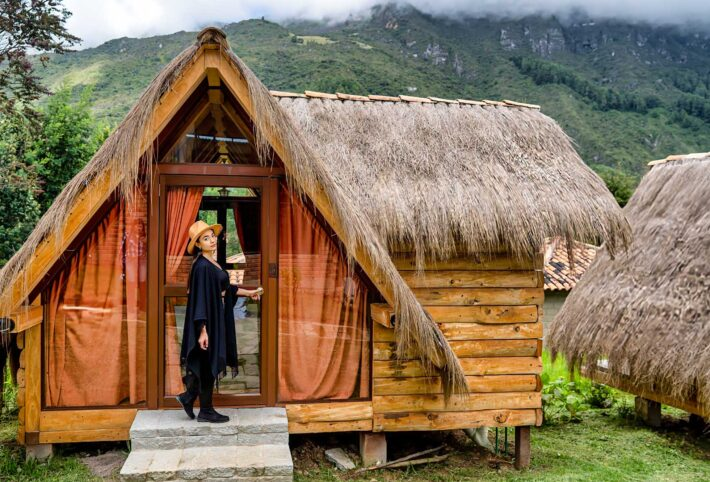
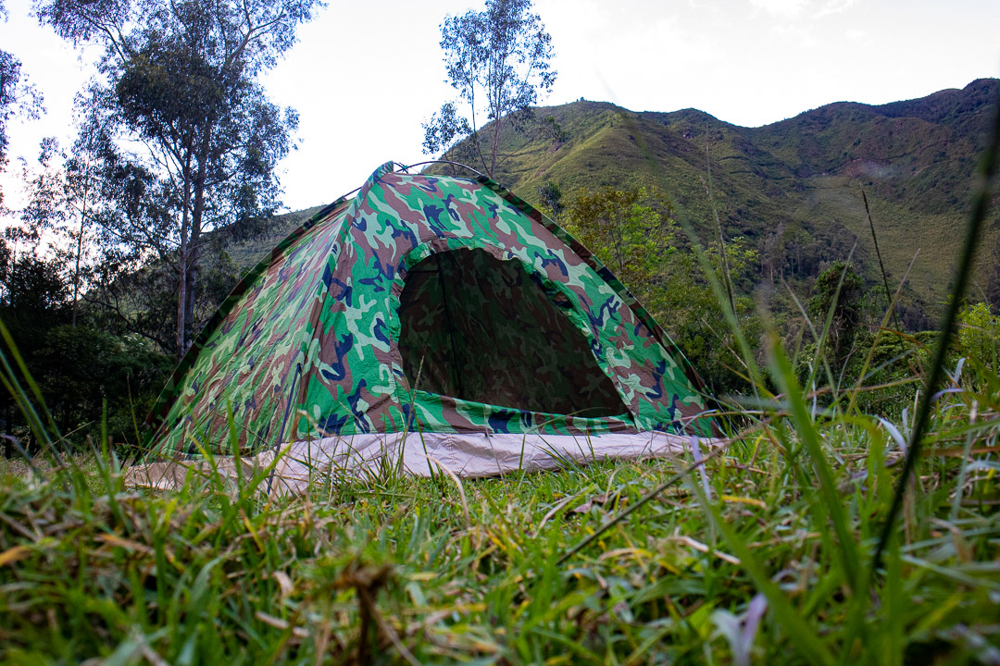
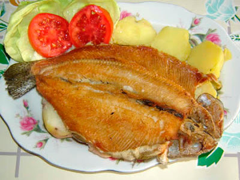
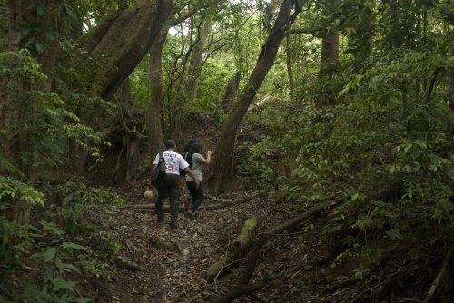
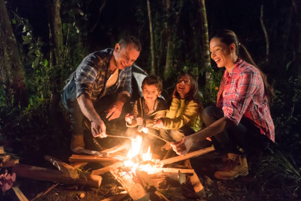
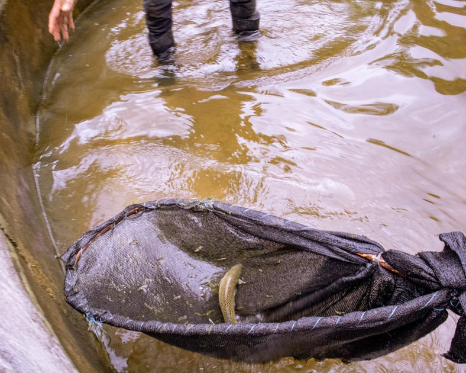

Servicios de La Rinconada de Pijal
Vive experiencias únicas en plena naturaleza
Cabañas Cómodas
Disfruta de nuestras cabañas rústicas y acogedoras, rodeadas de vegetación andina. Totalmente equipadas para garantizar tu descanso.
Camping
¿Prefieres dormir bajo las estrellas? Contamos con un área segura para acampar, con acceso a baños, duchas y zona de fogata.
Comida Casera y Orgánica
Ofrecemos deliciosos platillos preparados con productos frescos cosechados en nuestra propia granja. Una experiencia gastronómica auténtica y saludable.
Senderos Ecológicos
Explora nuestros caminos rodeados de árboles, flores nativas y aire puro. Una experiencia relajante para reconectar con la tierra.
Fogatas Familiares
Por las noches, disfruta de una cálida fogata rodeado de tu familia o amigos. Perfecto para compartir historias o disfrutar de un canelazo bajo las estrellas.
Pesca Deportiva
Ven a pescar en nuestras aguas cristalinas. Contamos con zonas habilitadas para pesca de trucha en un entorno natural y tranquilo.